{{f.title}}
{{f.blurb}}
{{f.stepNum}}. {{f.stepLabel}}
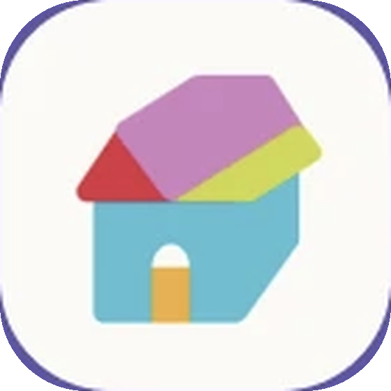
case study · UX/UI · 2024A gamified habit tracker where social media is a cozy little neighborhood that cheers you on, instead of a feed you compare yourself to.
my role
Product designer · Bulletin, Neighbors & My Home
team
4 designers
timeline
October – December 2024
tools
Figma, FigJam
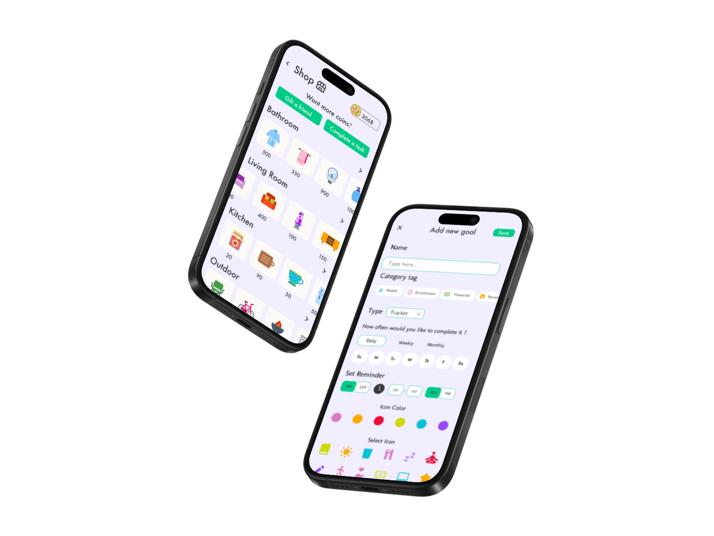
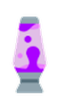
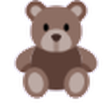
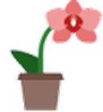
The problem. Constant social media use and internet multitasking are linked with poorer mental health and procrastination. Most feeds reward comparison, and most habit trackers feel like a chore you're failing at.
Our answer. Wellness Street is a neighborhood. Your avatar moves in, sets goals, and lives alongside neighbors who share progress, swap gifts, and keep each other going.
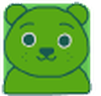
My part. I owned the two systems that make Wellness Street feel like a place instead of a checklist: the Bulletin (plus Neighbors and gifting), where people share progress, and My Home, the reward loop where healthy habits become coins, coins become furniture, and furniture becomes gifts.
Each phone plays through its flow on its own. Use the arrows to step through at your own pace.
{{f.blurb}}
{{f.stepNum}}. {{f.stepLabel}}
As a team we interviewed Gen Z and younger millennials about work-life balance, self-care and their phone habits, then compared habit and self-care apps such as Habit Tracker and Finch. Three themes shaped everything I designed afterward.
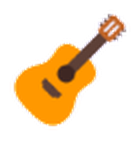
What people wanted
Something organized, customizable and fun: low-stress play that doesn't feed screen addiction.
What pushed them away
Comparison with others, low morale after a missed goal, and apps that nag too insistently.
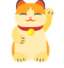
What they struggled with
Accountability. It's easy to fixate on what you did wrong; people wanted help focusing on what they could do next.
Progress over performance
Nothing on the feed should be rankable. Share the step, not the scoreboard.
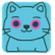
Rewards are earned by wellness
Coins come from healthy actions and kindness, never from a paywall.
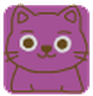
Generosity is the currency
Encouragement should be concrete: a gift on a neighbor's doorstep beats a like.
Before mid-fidelity, I sketched the core screens of my features to test those rules: where a post lives, who sees it, how a neighbor gets encouraged, and how coins move from a finished goal to a decorated home.
my features · Bulletin + My Home
1. the feed. progress posts, text or photo. gift · comment · heart, and no like counts!
2. posting. pick an audience (neighbors / close friends / just me) + the goal is required so the feed stays on wellness.
3. neighbors. activity becomes a nudge. gift comes from their wishlist → delivered to their doorstep.
4. the shop. "want more coins?" → gift a friend or do a task. no paywall. sorted by room like a real house.
5. buying. show the balance after so spending feels deliberate. success → keep shopping, storage, or decorate.
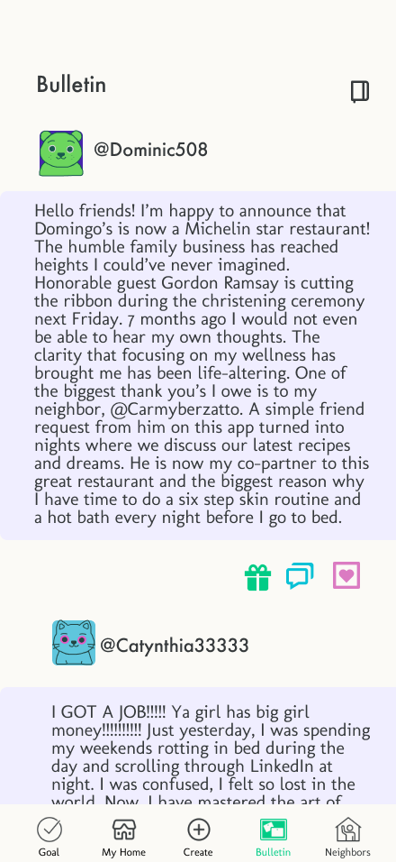
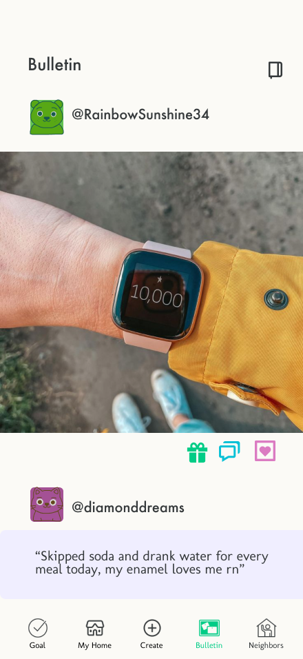
gift · comment · heart, and no counts!
Every post is tied to a goal
When you share, you pick which of your goals it's about. It's a required field, which keeps the feed about wellness rather than highlight reels.
You choose the audience, every time
Posts go to Neighbors, Close friends only, or My eyes only. The private journal gives bad days a place to land without performing for anyone.
Reactions without a scoreboard
Each post offers three actions: send a gift, comment, or heart. No public tallies, so there's nothing to rank yourself against.
Asking for help is a post type
Community polls let a neighbor ask, say, which water bottle will help them drink more. Accountability becomes a conversation.
Neighbors turn activity into nudges
"Started 3 goals today", "on a 5 day streak", "hasn't logged in a week, send some encouragement". Send gift opens their wishlist, so the gift is something they actually want, delivered right to their doorstep.
Your home is your profile. I designed the economy around it as one loop, so every piece of furniture in someone's house is a record of habits they kept.
"Want more coins?" never means "pay up"
The shop answers with two options: Gift a friend or Complete a task. The only way to earn is through healthy actions and kindness.
Shopping by room
Items are grouped as Bathroom, Living Room, Kitchen and Outdoor, mirroring the house you're building rather than an abstract catalog.
Deliberate spending
Confirming a purchase shows your balance afterward (3068 to 2968 for a lava lamp), and success offers three next steps: keep shopping, view storage, or decorate.
Earning connects back to the Bulletin
Earn Coins tasks include a seven-day login streak, voting in neighbors' polls, posting a progress update and completing goals, so the economy feeds the community.
Storage as a little collection
Storage shows a count out of 200, so owned items read as accumulated progress even before they're placed.
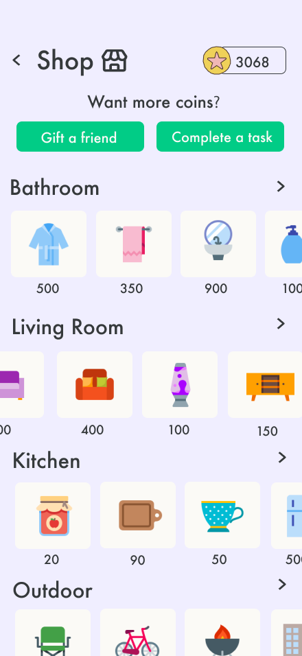
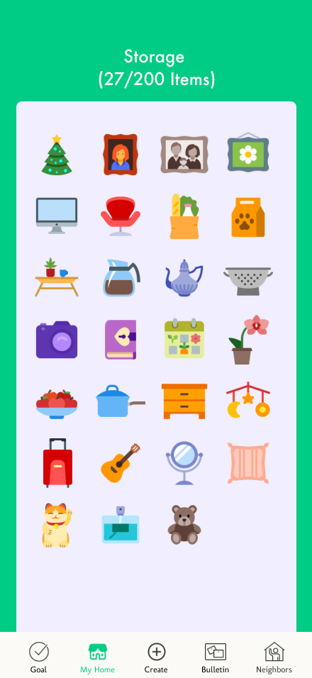
the logo
A little house built from the same playful accent colors as the goal icons: your home on the street, and the first thing you see when you move in.
A wellness green with soft lavender, plus playful accents for goal icons.
Futura Aa
Headers and buttons, for its dynamic geometry
Molengo Aa
Body text, for its cute rounded style
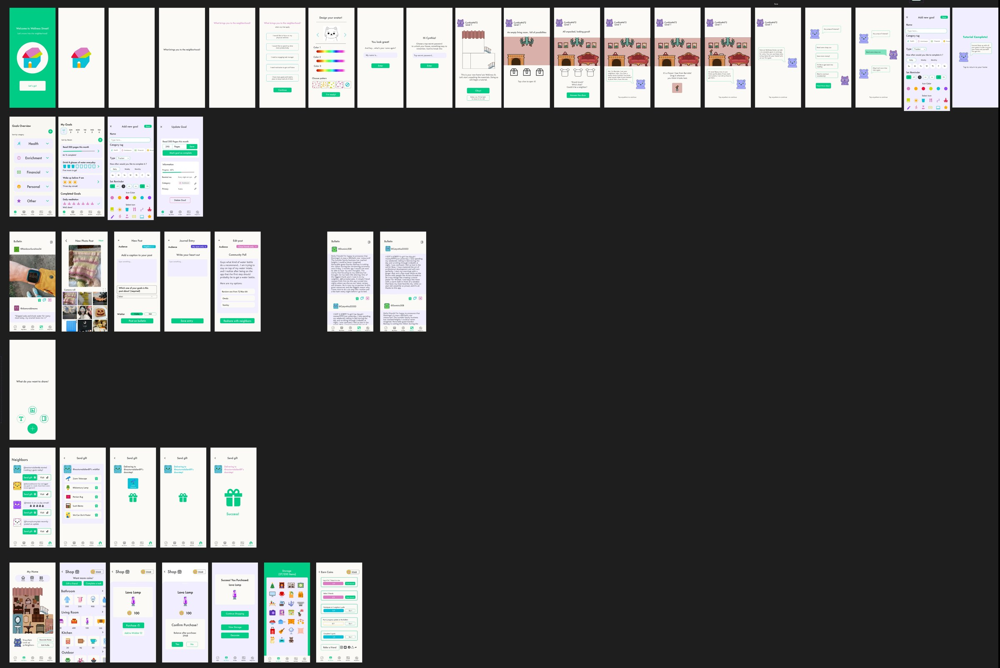
Removing things is a design decision. The hardest calls on the Bulletin were about what to leave out. Dropping public like counts and making audience a choice on every post each took away a place for comparison to creep in.
An economy is a set of values. Deciding what earns coins is deciding what the app rewards. Tying every reward to wellness or kindness kept the game from competing with the goal.
Next steps. I'd test coin pricing and earning rates with users to make sure the loop feels generous without becoming a grind, and explore a richer, more immersive art style for the home.
the neighbors who built it